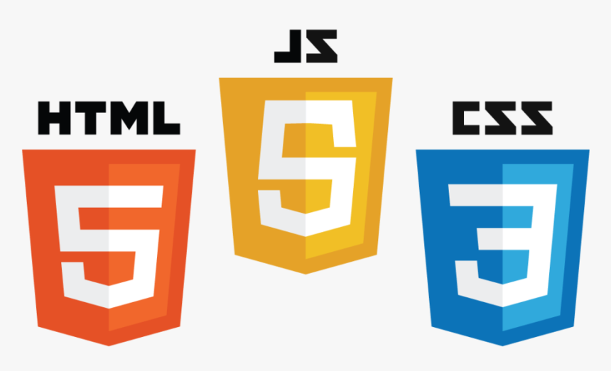

Currículum
Educación
- Master Degree Project Management Professional
- Business Administration
- Technologist in Analysis and Development of Information Systems
Experiencia Laboral
- Definir y acordar con el cliente los objetivos y el alcance del proyecto.
- Planificar y organizar el proyecto, incluyendo la identificación de actividades, costos, tiempos, riesgos y recursos.
- Dirigir y coordinar el equipo de trabajo para cumplir con los objetivos establecidos.
- Gestionar la calidad del proyecto y mantener relaciones con clientes, proveedores y otros stakeholders.
- Tomar decisiones para mantener el proyecto dentro del alcance y los objetivos establecidos.
- Adoptar medidas preventivas y correctivas para evitar desviaciones.
- Automatización e Implementación de un sistema de gestión y control de nómina para más de 25 empresas nacionales y extranjeras
- Colaborar con los líderes y partes interesadas de la institución para definir el alcance y los objetivos del proyecto.
- Identificar los recursos necesarios para el proyecto y trabajar con los departamentos relevantes para asegurarse de que se asignen adecuadamente.
- Planificar y supervisar la ejecución del proyecto, incluida la identificación y mitigación de riesgos y la solución de problemas.
Coordinador de Proyecto Software Payroll MONTTCOLOMBIA SAS
Abril 2021 - Octubre 2021
Logros:
Coordinador de Proyectos ARMADA NACIONAL DE COLOMBIA
Julio 2014 - Octubre 2019
Habilidades
Proyectos

Sobre Mí
Tecnólogo en Análisis y Desarrollo de Sistemas de Información; con pasión por participar en proyectos de software, con experiencia y conocimientos en el ciclo de vida del software, Ciclo de vida del desarrollo de Software, patrones de diseño POM - COMANDS - SCREMPLAY, programación orientada a objetos, JAVA, casos de uso, análisis de requerimientos, diseño de planes de prueba y casos de prueba, ejecución de pruebas entre otras. Pruebas unitarias, pruebas de integración BD, APIS CRUD, pruebas Sistemas, pruebas de aceptación, Smoke Test, pruebas exploratorias. Me he desempeñado como Tester QA haciendo uso de metodologías ágiles y marcos de trabajo como scrum, siguiendo las buenas prácticas de ISTQB.
Contacto
Puedes contactarme a través de:
- Email: bbltrabajo@gmail.com
- Teléfono: +57 - 3208502154
- Redes Sociales: www.linkedin.com/in/belisario-buitrago-lievano-64a8a175